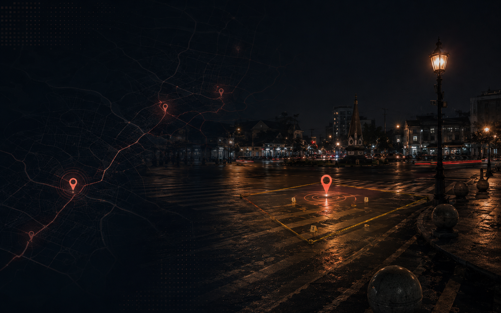
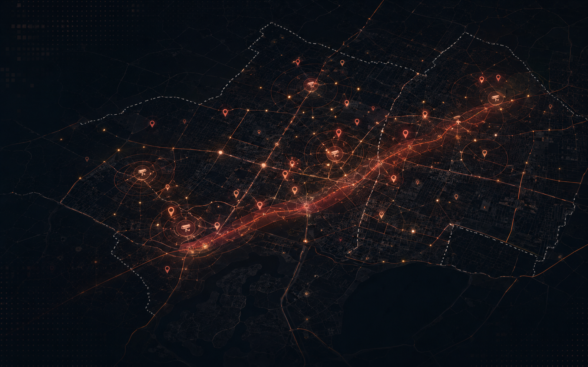

Peta Interaktif
Layer zona, kejadian, CCTV, PJU, pos polisi, titik keramaian, batas admin, dan koridor rawan tetap tersedia.
Buka Peta →GeoSafe Yogyakarta menggabungkan titik kejadian, CCTV, PJU, pos polisi, keramaian, dan pembobotan AHP ke dalam dashboard WebGIS yang lebih hidup seperti landing page analitik lokasi.
Strukturnya mengikuti gaya landing page modern: hero dinamis, preview peta, kartu solusi, ringkasan data, dan CTA yang jelas—tanpa menghilangkan elemen WebGIS lama.
Layer zona, kejadian, CCTV, PJU, pos polisi, titik keramaian, batas admin, dan koridor rawan tetap tersedia.
Buka Peta →Analisis dibuat lebih terarah ke parameter peta: zona, tahun, CCTV, PJU, pos polisi, dan klasifikasi kerawanan.
Lihat Analisis →Kartu berita tetap diarahkan ke sumber asli sehingga data kejadian bisa ditelusuri kembali.
Buka Berita →CCTV, PJU, dan pos polisi dipakai sebagai indikator pendukung untuk membaca prioritas wilayah.
Tampilkan Layer →Komposisi kriteria dipertahankan supaya peta risiko, ringkasan analisis, dan konteks dashboard tetap sejalan dengan PPT/PDF.
Bagian ini membantu pengguna memahami fungsi peta, analisis, berita, CCTV, PJU, dan rekomendasi tanpa memenuhi hero utama.

Konteks persebaran kejadian yang dianalisis.
Peran kamera publik dan potensi blind spot.
Klasifikasi wilayah dan prioritas intervensi.

Menghubungkan kejadian, radius CCTV, dan batas wilayah.